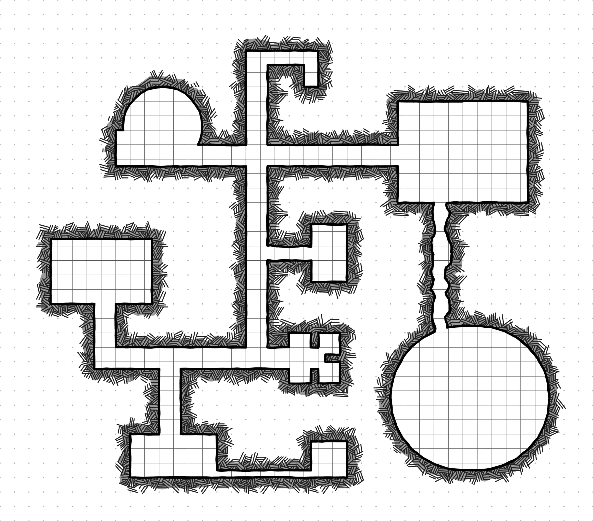

Properties
- title
- LazyDM
- for
- Dungeon Masters
- runs on
- macOS, Windows, Linux
- status
- pre-1.0
LazyDM
Prep your campaign once, then run the table without hunting for anything. Every note is a plain Markdown file in a folder you own.
LazyDM is not released yet. It is made by a Dungeon Master, for Dungeon Masters, and heading to 1.0.
Your files, your folder
Your campaigns are ordinary .md files in a folder you choose, called the Codex. LazyDM reads and
edits them. It never locks them into a database, and an Obsidian vault and a Codex are the same kind of folder.
- You own it
- Move the folder, back it up or open it in any Markdown editor. Nothing is stuck in the app.
- Lazy by design
- Sensible defaults and one-click paths, at the desk while you prep and at the table while you run.
- Rebuildable index
- Search and links run from a local index. Delete it and it grows back from your files.
Prep once
Write scenes, characters and enemies as notes and tie them together with [[links]]. Rename a note
and the links to it follow. A page called Review lists broken links and misplaced notes, and fixes them when you
say so.
--- title: Ambush at the ford tags: [encounter, session-3] --- # Ambush at the ford The road narrows at the river. [[goblin-scout]] watches from the reeds and runs for [[the-old-mill]] if hurt. ![[ambush.json]]
Ambush at the ford
The road narrows at the river. goblin-scout watches from the reeds and runs for the-old-mill if hurt.
Written for this page. Switch between Source and Reading; the app also has Live preview, which renders as you type.
- Templates per kind of note and per campaign, with a built-in one for each.
- Links panel shows what links to a note and what it links to.
- Compendium keeps shared systems you copy into any campaign. The original stays put.
- Assets: paste or drop images, audio and PDFs straight into a note.
Run the table
An encounter is a file you link like any note. Add combatants, roll initiative, then step through the turns. Hit points, temporary hit points and statuses with round counters sit on the row, and the dead go to a cemetery you can recover from.
A sample drawn for this page, not a screenshot, on made-up combatants. Everything works: step through the turns, open a row’s … menu, manage HP, type a status like stunned 3, drag a row by its handle, or stop the battle and roll initiative.
Each row follows a Tracker layout you can change, with a dice formula for initiative if you want one.
Pin the place
Drop any image of a map into your assets and mark it up. Pins can open a note, so the guard post opens the guard post. Draw a path for the party’s route, close one into an area, and leave a note where the floor is slick.

A sample on a map drawn for this page. Pick a place in the list, or click a pin. Choose a tool to add your own; nothing is saved.
Sync with what you have
Keep the Codex on this computer, or in an iCloud, Dropbox, OneDrive, Box or Google Drive folder. Your cloud app does the syncing. LazyDM waits for files that are still downloading and warns you when two devices changed the same note.
If you want an AI assistant to help with notes, LazyDM can run a local MCP server. It is off until you switch it on, it only listens on your own computer, and writing and deleting are separate switches that start off.
- Light and dark
- Both themes, in English, Italian, German, Spanish, French, Ukrainian and Chinese.
- Split screen
- Open any note, map or encounter beside another. The same note in both sides is one live document.
See it grow
There is no download yet. Follow the project on GitHub to see it take shape.